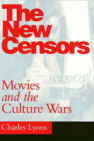

<body bgcolor="#FFFFFF" text="#000000" link="#0000FF" vlink="#CC0000" alink="#CC0000"><center><hr width="350" size="1" align="center" noshade>Focuses on the movie industry and the role pressure groups and government has played in shaping contemporary images<hr width="350" size="1" align="center" noshade><p><a href="https://cdcshoppingcart.uchicago.edu/Cart/ChicagoBook.aspx?ISBN=9781566395113&&PRESS=temple" target="_top">Buy this book!</a> | <a href="https://cdcshoppingcart.uchicago.edu/Cart/Cart.aspx?PRESS=temple" target="_top">View Cart</a> | <a href="https://cdcshoppingcart.uchicago.edu/Cart/Cart.aspx?PRESS=temple" target="_top">Check Out</a></p><p></p></center><!--none//--><h1>The New Censors</h1>
<H2>Movies and the Culture Wars</H2>
<h3>Charles Lyons</h3>
<P>cloth 1-56639-511-9 $69.95, Mar 97, <FONT COLOR=#990033>Out of Print</FONT>
<br>paper 1-56639-512-7 $29.95, Apr 97, <FONT COLOR=#990033>Available</FONT>
<BR> 248 pp
5.5x8.25
3&nbsp;figures 9&nbsp;halftones
</P><BLOCKQUOTE><I>"A timely, accessible and sophisticated study that illuminates how screen images and pressure groups interact."</I>
<br>&#151<b>Annette Insdorf</b>, Columbia University<I></I></BLOCKQUOTE>
<p>After the Supreme Court's rejection of legal movie censorship in the 1950's and the demise of the Hays Production Code in the 1960's, various public groups have emerged as media watch dogs, replacing nearly all other sources of control. Responding to explicit violence against women, negative stereotypes of gay and lesbian images, "racist" representations, and "blasphemous" interpretations of the Bible, groups from both Left and Right have staged protests in front of theaters and boycotted movie studios. <i>The New Censors </i>shows how groups on the Left empowered by social movements in the 1960's, and groups on the Right propelled by the successes of the New Christian Right and "The Moral Majority," have used similar strategies in attempting to control movie content.
<p><i>The New Censors, </i>the first study of the complex ways movies have been shaped in the years since the demise of the Code, covers a wide range of movies, protests, and government actions. From feminists against "Dressed to Kill," to religious campaigns against "The Last Temptation of Christ," to homosexuals' ire over "Basic Instinct," Lyons links a study of public outrage against movies to the broader culture wars over "family values," pornography, and various lifestyle issues.
<p>This book provides a contemporary history of controversial movies and a timely discussion of how cultural politics continues to affect the movie industry.
<BR>&nbsp;<h2>Excerpt</h2><P>Excerpt available at <a href="http://www.temple.edu/tempress">www.temple.edu/tempress</a></p>
<BR>&nbsp;<h2>Contents</h2><P>
<p>Acknowledgments
<br>Introduction: Don’t Watch That Movie!
<br>1. Warning&#151"Political Propaganda": The Case against <I>If You Love This Planet</I> (1982)
<br>2. Murder of Women Is Not Erotic: Feminists against <I>Dressed to Kill</I> (1980)
<br>3. Nor More Racist Movies Here: Asian Americans against <I>Year of the Dragon</I> (1985)
<br>4. We Are Not Invisible: Gays and Lesbians against <I>Basic Instinct</I> (1991-1992)
<br>5. This Film Is Blasphemy: Religious Opposition to <I>The Last Temptation of Christ</I> (1988)
<br>Conclusion: Winners and Losers
<br>Notes
<br>Index
</P><BR>&nbsp;<H2>About the Author(s)</H2>
<table><tr><td valign="top"><img src="/tempress/authors/1219_au.gif" height="90" width="75"></td><td width="100%" valign="middle"><p><B>Charles Lyons</B> holds a Ph.D. in theatre and film from Columbia University. He is a development associate for Mud Pony Productions at The Walt Disney Company and a screenwriter. His editorials appear in the <i>Los Angeles Times </i>and <i>New York Newsday, </i>and he recently contributed to an anthology entitled <i>Censorship and American Culture.</i></P></td></tr></table>
<BR><H2>Subject Categories</H2>
<p><A HREF="/tempress/cinema.html" TARGET="_top">Cinema Studies</a>
</p>
<BR><h2 class="inpageheading">In the series</H2>
<P><I><a href="http://www.temple.edu/tempress/culture.html" onMouseOver="window.status='Click for other books in this series!'; return true;" onMouseOut="window.status=''; return true;" target="_top">Culture and the Moving Image</a></i>, edited by Robert Sklar.
</p><p>The <I>Culture and the Moving Image</I> series, edited by Robert Sklar, seeks to publish innovative scholarship and criticism on cinema, television, and the culture of the moving image. The series will emphasize works that view these media in their broad cultural and social frameworks. Its themes will include a global perspective on the world-wide production of images; the links between film, television, and video art; a concern with issues of race, class, and gender; and an engagement with the growing convergence of history and theory in moving image studies.</p>
<p align="center"><a href="https://cdcshoppingcart.uchicago.edu/Cart/ChicagoBook.aspx?ISBN=9781566395113&&PRESS=temple" target="_top">Buy this book!</a> | <a href="https://cdcshoppingcart.uchicago.edu/Cart/Cart.aspx?PRESS=temple" target="_top">View Cart</a> | <a href="https://cdcshoppingcart.uchicago.edu/Cart/Cart.aspx?PRESS=temple" target="_top">Check Out</a></p><p><font face="Arial" size="1"><a href="copyright.html" onMouseOver="window.status='Web Copyright Policy';return true;" onMouseOut="window.status=''" title="Web Copyright Policy">&copy;</a> 2015 <a href="http://www.temple.edu" target="new" onMouseOver="window.status='Link to Temple University home page';return true;" onMouseOut="window.status=''" title="Link to Temple University home page">Temple University</a>. All Rights Reserved. http://www.temple.edu/tempress/titles/1219_reg.html</font></p>